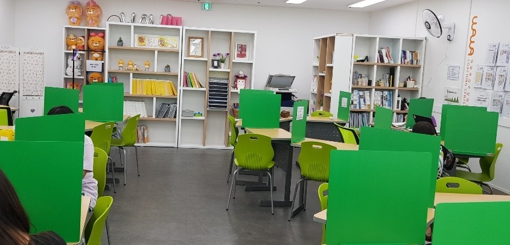
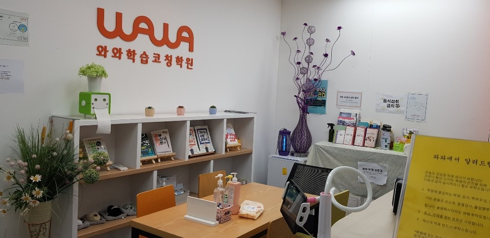
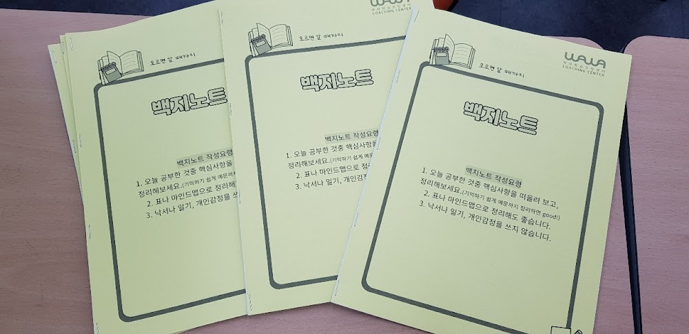

안녕하세요, 영등포구 당산동 와와학습코칭 당산점입니다. 오늘은 학부모님들이 의외로 많이 놓치는 수행평가와 서술형 이야기를 전해드립니다.
수행평가는 '미리' 준비하는 시험입니다
지필고사만 시험이라고 생각하기 쉽지만, 요즘 내신에서 수행평가 비중은 30~40%에 이릅니다. 당산중·당산서중·선유중 학생들, 선유고·여의도고 학생들 모두 수행평가에서 갈리는 경우가 많습니다.
수행평가는 벼락치기가 안 됩니다. 대신 미리 알고 준비하면 확실히 점수를 챙길 수 있는 영역입니다. 그래서 당산점은 방학 때부터 2학기 수행평가를 함께 준비합니다.

서술형에서 점수를 잃는 이유
"아는데 답을 못 썼어요." 서술형에서 가장 흔한 말입니다. 알고 있는 것과 문장으로 설명하는 것은 완전히 다른 능력이기 때문입니다.
- 답만 쓰지 말고 풀이 과정을 문장으로 써보기
- 배운 개념을 자기 말로 설명해 보기 (설명이 막히면 아직 모르는 것)
- 채점 기준을 미리 보고 무엇을 써야 점수가 되는지 파악하기
당산점 학생들은 매일 배운 내용을 코치 선생님께 말로 설명합니다. 이 훈련이 쌓이면 서술형이 두렵지 않습니다.

방학이 수행평가 준비의 최적기
학기 중에는 진도 따라가기 바빠 수행평가를 준비할 여유가 없습니다. 방학이야말로 글쓰기·발표·실험 보고서 같은 역량을 차분히 쌓을 수 있는 시간입니다. 당산삼성래미안·당산센트럴아이파크 단지 학부모님들, 2학기 내신은 지금부터 시작입니다.
.와와학습코칭 당산점 학년별 공부 방법
당산동 와와학습코칭(와와학습코칭 당산점)은 초등학생·중학생·고등학생 각 학년에 맞는 공부 방법으로 지도합니다. 조용한 자습실·공부방에서 스스로 공부하고, 영어학원·수학학원·과학학원·국어학원처럼 과목별 코칭까지 한곳에서 받을 수 있습니다.
- 초등학생 (초1·초2·초3·초4·초5·초6) — 매일 정해진 분량을 스스로 해내는 공부 습관과 기초 개념 잡기. 당산동 초등 영어학원·수학학원·공부방을 찾으신다면.
- 중학생 (중1·중2·중3) — 자유학년제·내신 대비, 오답 정리와 서술형 훈련. 당산동 중등 영어학원·수학학원·과학학원·국어학원.
- 고등학생 (고1·고2) — 내신과 수능을 함께 잡는 자기주도학습 플래닝과 취약 과목 집중. 당산동 고등 영수학원·종합학원·자기주도학습.
와와학습코칭 당산점 위치와 주변
- 🚇 교통 — 2·9호선 당산역에서 도보 약 5분
- 🏢 인근 아파트 — 당산삼성래미안4차, 당산센트럴아이파크, 효성1차·2차, 유원제일2차, 성원상떼빌 등 단지에서 도보로 오실 수 있습니다.
와와학습코칭 당산점 인근 학교
당산동 와와학습코칭(와와학습코칭 당산점)은 인근 학교 학생들의 내신·수능을 함께 준비합니다. 아래 학교에 다니는 학생이라면 영어학원·수학학원·과학학원·국어학원을 따로 찾을 필요 없이, 가까운 우리 센터에서 과목별 1:1 자기주도학습 코칭을 받을 수 있습니다.
- 인근 초등학교 — 당서초등학교, 영동초등학교, 당중초등학교 영어학원·수학학원·과학학원·국어학원
- 인근 중학교 — 당산중학교, 당산서중학교, 선유중학교 영어학원·수학학원·과학학원·국어학원
- 인근 고등학교 — 선유고등학교, 여의도고등학교, 여의도여고등학교, 영등포여고등학교, 관악고등학교 영어학원·수학학원·과학학원·국어학원
📍 와와학습코칭 당산점 센터 정보 자세히 보기 — 주소·전화·인근 학교 안내를 확인하실 수 있습니다.